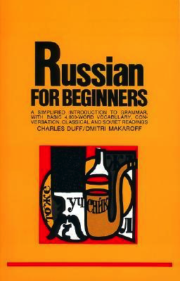

Resources
Software tools
Anki is a very widely-used tool for language learning. At it's core, it's a spaced repetition learning application. I use Anki daily both for memorizing vocabulary and for practicing grammar as applied to example sentences and other snippets.
Duolingo is a popular online language learning system with Russian as one of the available languages. I have a love-hate relationship with Duolingo. If you are starting out ab initio, then it could be particularly painful. It doesn't start out in a way that gets users started speaking conversationally. In fact, the loosely-connected lessons don't ever string together enough conversational context to be of use. The computerized voice can be downright awful sometimes.
Babbel is an alternative to Duolingo. Since Babbel is not a free resource, I've only seen the snippets that are available as a teaser, certainly not enough to determine whether it's superior to Duolingo or not. Someone who finished the entire Russian course took the time to review it here. When he wrote this in 2015, he noted that the course quality fell off rapidly after the introductory lessons. I have no idea whether that has changed since his review.
Memrise differs from both Duolingo and Babbel in that it appears to be a clearinghouse for online learning courses, including languages. I've played around a bit with Memrise a bit and it looks interesting. The pace is good, but I can't see a connection between the courses that are available. And I don't see how the content within a given course is organized. (I did Russian 4.) Nonetheless, it's worth exploring more.
Clozemaster is fun. Basically, it's a game that presents you with sentences in Russian and English. One word is missing in the Russian sentence and you have to pick the right word. (The "cloze" part of the name is from the English word "cloze" which comes from the concept of closure in Gestalt therapy.) Cloze tests or cloze deletion tests is a type of assessment where a portion of a text is omitted and the participant is required to fill in the blank. Anyway, Clozemaster does just that. It's a fun way to occupy some time practicing functional vocabulary. At best, it would supplement more comprehensive learning.

Books
Beginning courses
With any of these courses, you'll need consistent speaking and listening practice.
New Penguin Russian Course: A complete course for beginners by Nicholas Brown (NPRC)
This is a very frequently used text for self-study. It's very dense and organized into 30 lessons of varying length. Some lessons are much more complicated than others. Some subjects like the verbs of motion aren't as thoroughly-treated as they should be. But this is a good "spine" for studying the Russian language. One of its main advantages over other courses are the frequent self-assessment exercises.

Russian for Beginners by Charles Duff - I rather like this course although it seems to be less popular in the Russian self-study community. Some of its explanations are better than in the NPRC and the typography is definitely more legible than the former. My main critique of the Duff course is the complete lack of self-assessment exercises. Other than reading the texts, there is no way to test your understanding of the grammatical concepts that are presented in each unit.

The Penguin Russian Course by J. L. I Fennell - this is the predecessor of the NPRC. My old copy that I bought in high school in the early 1980's is weathered and falling apart but it remains a useful resource. The type is larger and less dense than the NPRC. There are still decent used copies available.

Grammar books
A Comprehensive Russian Grammar (CRG) by Terence Wade

A well-regarded text of Russian Grammar, the Wade book is a good upgrade from the basic general course material. That said, I've found several editing errors.
The Wade grammar text has a compain exercise book with practice questions. While I have a copy, as of February 2017, I haven't had enough time to go through it yet.

Web-based resources
Pronunciation
Forvo - This is a crowdsourced pronunciation database. Very few Russian words are lacking here. It's a great resource when there's a question about syllabic stress. When building my Anki cards, I use it to grab pronunciation to add to cards.
Vocabularies
О. Н. Ляшевская, С. А. Шаров, Частотный словарь современного русского языка - frequency dictionaries based on the Russian National Corpus.
Национальный корпус русского языка - the National Corpus of the Russian Language
Dictionaries
Open Russian - This is a mashup of several sources of open data. Definitions, conjugations, declensions, related words, and example sentences on one well-organized page. This is my #1 dictionary.
Академик - massive collection of specialized dictionaries. This is not Russian-English/English-Russian; so you have to be pretty good at Russian already.
Wiktionary - this is a great site for definitions, inflections, related terms, etc.
Russian Dictionary Tree - from Cornell. It is simple in format; but I frequently encounter words that it doesn't know.
Tatoeba - a dictionary of example sentences.
Grammar
Грамота - A Russian grammar site.

Change log
2017-03-02 - added details about software resources, covers for self-study courses